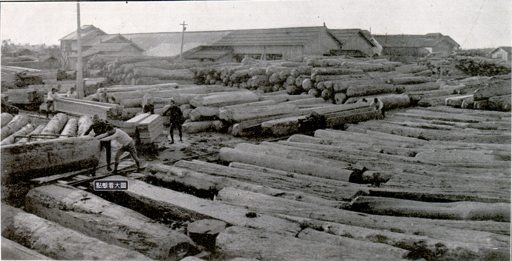
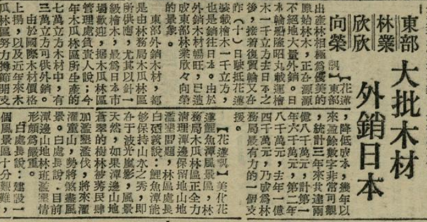

木業基礎設施的建立#
在山林被化約為「空白背景」之後，台灣總督府進一步將廣褒的林野納入資本主義生產體系，使其能依循殖民政權自身利益進行社會生產。其中最具代表性的營利組織為花蓮港木材株式會社，其前身為東臺灣木材合資會社，於大正7年（1918）開始在林田山事業區進行伐木作業；翌年製材工場完工並改組為株式會社；大正10年（1921）起開始將木材輸出至日本「內地」；昭和8年（1933）則著手建設木瓜山事業區索道，並於隔年完工後開始輸送高經濟價值的扁柏屬原木（扁柏與紅檜）（台灣山林會，1926；《台灣日日新報》，1934）。花蓮港木材株式會社直到太平洋戰爭爆發前一直是花蓮港木材產業的核心，其業務涵蓋伐木、運輸、加工與出口，是東台灣最為成熟的木材產業供應鏈。

Fig. 1 花蓮港木材株式會社的製材廠。來源：橋本白水（編）。（1923）。東宮殿下奉迎記念寫真帖［花蓮港木材會社工場］。台灣總督府花蓮港廳。#
田浦原稱Natauran（斗難、荳蘭），是南勢阿美Natauran與Buner部落的傳統領域。台灣總督府鐵道部為了有效調配殖民地的資源，於明治43年（1910）開始鋪設台東線鐵道（橋本白水，1926）。荳蘭驛則於隔年2月10日開始營運，初期主要以促進人員流通與控制南勢諸部落為主（橋本白水，1926；鐵道省，1937）。荳蘭在昭和12年（1937）東台灣兩廳改街庄制時被更名為田浦，車站亦跟著改稱田浦驛（台灣總督府，1937）。同年太平洋戰爭爆發台灣進入戰時體制，三井財閥的關係企業南邦林業株式會社花蓮港支店以「軍需企業」之姿於昭和18年（1943）著手於太魯閣山區的林業整備，但直自戰爭結束前都並未進入量產階段（王鴻濬，2018）。戰後國民黨遷佔政權接收日治時期的林業襲產，南邦林業所持有的タロコ大山事業區被重組成太魯閣林場。截至終戰由南邦林業株式會社所完成的運材系統，除了林場內的索道與木馬道平地尚有長約3.8公里的「私設平地線」，從林場出入口佐倉貯木場一路延伸到鹽水港製糖株式會社的製糖軌道，再透過製糖軌道連結到田浦車站以銜接台東線鐵道（張嘉榮，2018）。爾後太魯閣林場陸續闢建太昌貯木場、田浦製材廠與田浦貯木池等設施，且為了就地管理又將太魯閣林場管理處設置在田浦並建有宿舍。田浦周遭的民營製材廠、建材行與木製家具店隨著木業基礎設施與官僚機構的設立而逐漸聚集，形成戰後花蓮市郊繁盛一時的木材產業聚落。

Fig. 2 。戰後花蓮的木業「盛況」。來源：東部林業欣欣向榮，大批木材外銷日本．（1966-04-12）．《臺灣民聲日報》（第7767號）．國立公共資訊圖書館。#